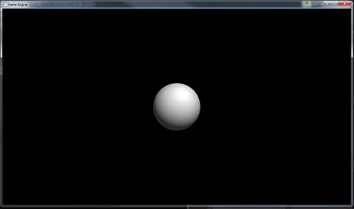

To begin with, you need to download the ComponentFramework zip file and the Gamedev zip. Unpack the GameDev file and place them at the top of your C:\ drive.
Then unpack the ComponentFramework files anywhere on your computer.
Next, copy all the files on the right to your ComponentFramework folder
where all the other ccp and header files are located - except, the "Obj Format" and "deriving the projection Matrix". Compile the project to test
that all is well.
Open the Main.cpp and make the window size a little more contemporary. I suggest 1280x720.
Let's start by building a Camera class. If you are grumbling that there is no Camera, I'm pleased, I guess you came to class.
Go to the solution explorer and add a new class caller Camera. We will need to create a projection matrix and a view matrix.
In proper OOP style make them private.
Next, build a function to set the projection matrix using MMath:perspective(...) and a second function to populate the
view matrix using MMath::LookAt(...). In the constructor give both matricies resonable default values.
Include the code to "get" the matricies from the Camera. The code should look something like this:
Now we are going to need something to draw. In the hope of building this code into a game engine, I sugget that we create
a new class called GameObject. This class will need to have a model matrix assigned to it so it can positioned in 3-D space. I will
also need a pointer to Mesh object and a pointer to a Shader object responsible for rendering the mesh.
The code should look something like this:
Open the file Scene0.h.
It seems reasonable that the Scene would be proper place to hold the Camera, so go ahead and
make a pointer to a Camera there and make a pointer to a GameObject. Since the first shader will light the GameObject with
a Phong Shader, the project will need a Vec3 to hold the position of the light source. Add that as well. A fragment of that
code should look like this:
Open the file Scene0.cpp.
The responsibly for creating the camera, for loading the OBJ file and placing into the mesh and for creating a shader, all rest
here. The code is somewhat complex and will need a lot of explaining - please come to class for the full description. This
is what the OnCreate() needs to look like. You will need to include several header files to make this work.
All that is left is to render the Scene. There are a few steps first.
Use glUseProgram() to bind to the GameObject's shader.
Use glUniformMatrix4fv() to send all the matricies to the GPU.
Use glUniform3fv() to send the lightsource's position.
Call GameObject's Render()
It needs to look like this:
